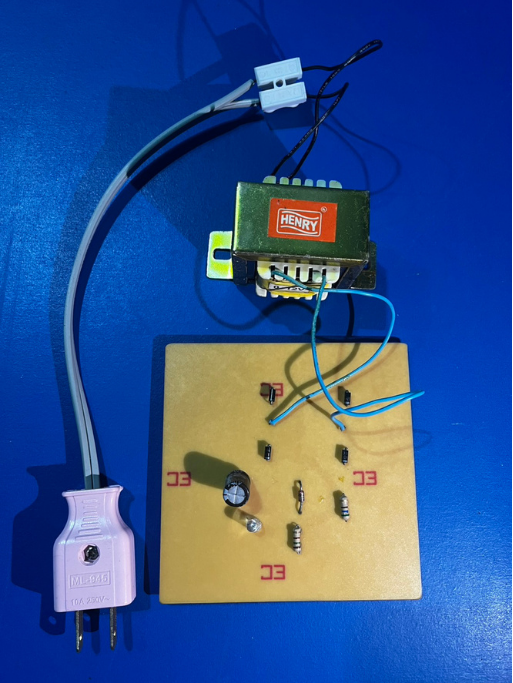
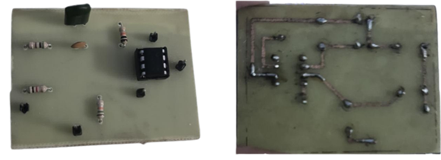
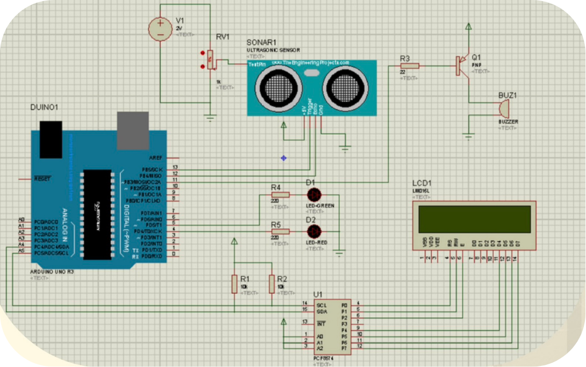

วงจรเรียงกระแสแบบบริดจ์
วงจรแปลงไฟฟ้าสลับ AC ให้เป็นไฟฟ้าตรง DC แบบเต็มคลื่น Full-wave โดยใช้ไดโอด 4 ตัว ต่อเรียงกันเป็นรูปบริดจ์
- Proteus
โครงงานที่เคยมีส่วนร่วมในการพัฒนา

วงจรแปลงไฟฟ้าสลับ AC ให้เป็นไฟฟ้าตรง DC แบบเต็มคลื่น Full-wave โดยใช้ไดโอด 4 ตัว ต่อเรียงกันเป็นรูปบริดจ์

วงจรกรองสัญญาณอิเล็กทรอนิกส์ที่จะ บล็อกหรือกั้น สัญญาณในช่วงความถี่เฉพาะที่กำหนดเอาไว้ ไม่ให้ผ่านไปได้ แต่จะปล่อยให้ความถี่ที่ต่ำกว่าและสูงกว่าช่วงนั้นผ่านไปได้ตามปกติ

ระบบฮาร์ดแวร์และซอฟต์แวร์ที่ออกแบบมาเพื่อป้องกันอันตรายต่อชีวิตมนุษย์ เครื่องจักร และสิ่งแวดล้อมในกระบวนการผลิต